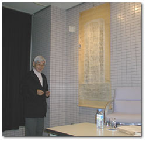
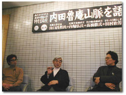

|
高橋 はじめまして。月の輪書林の店主、高橋徹です。東京外骨語大学の授業はいつも即興的で、実は今日もなんの打ち合わせもしていないのです。今日は何をしゃべってもいいんですか？
内堀 神田小川町にある東京古書会館の即売会は、朝一番にお客さんがみえて、いい物はそこで買われてしまうというイメージがあって、夕方ぐらいになると何も掘り出し物は残っていないという雰囲気があるのですが、山口さんは夕方ぐらいにふらっとみえて、ものすごい量を買うのです。こういう言い方は失礼ですが、ものすごい量を買うわりにはあまりたいした値段にはならない（笑）。とにかく２山ぐらい買うのですが、高値の本がないのです。
山口さんはよく、雑本だとかゴミだという言い方をしますけれども、ああいう買い方をする人ってあまりいないのです。蒐集というのは、１つのテーマを持って買っていかれる方と最初にドンと買われる方とがいますね。
山口 買い方はいろいろあると思うのです。私は古書会館に昭和３０年から出入りしているから、古書会館との付き合いは長いのです。でも何を買ったかを記憶しているのは２点だけしかない。いわゆる稀覯本をねらいを定めて探すということは、１回もしたことがないんじゃないかと思うのです。先日、NHKに勤務している長男が来て、「お父さんが死んでも、遺産としてもらいたい本はあまりなさそうだね」と言われた（笑）。
１９６９〜１９７０年、フランスのナンテール大学の客員教授で教鞭をとっていたとき、パリの古本屋にはしばしば出入りしていました。そのときに意識したのは、気取った言葉で言えば、「いままで出現しないパラダイムを作れば、そのパラダイムの中に場所を見つける本が集まってくる」ということです。
１９７８年頃だったから、ジュール・シェレ（ポスターの元祖）が５、６万円で買えた。いまだったら５０〜６０万円という値段だと思うのです。それから、サーカスの本をたくさん買いました。当時、サーカスの本はほとんど買う人がいなかったから、僕のほとんど１人勝ちです。１０００〜２０００円ぐらいで１９〜２０世紀の初頭に書かれた本をどんどん買い集めていったわけです。その頃は、まだ、身体性が重要なテーマだということを本の世界では自覚していなかったから、道化に関するもの、サーカスに関するもの、版画でおもちゃに関するものは、極めて安く売っていた。ほんとうに安いモノばかりを集めていました。
まだ出現していないパラダイムを予感にしたがって集めていくわけです。本は１冊だけで完結しているものではなくて、連続性がある。流布している「もの」の見方・秩序の中でおさまっている本もあるけれども、横にどんどん広がっていくために使う道具としての本、そういう「もの」があるから自分の勘で蒐集するわけです。文化人類学者ならそれを投機、スペキュレーションともいうかも知れない。ある種の予感、それは自分が近代人であることを忘れてシャーマン（幻視者）になったときに起きるわけです。だから、神のお告げによって本が出た。雑本ばかり（笑）。おみくじとあまり変わらないと思うね、当たり外れが多い（笑）。
だけどそういう集め方をしたことで、神の加護があると確信したことがあった。札幌大学の６号館研究室で午前０時半頃まで仕事をして、研究室を出たわけです。守衛は電気を消してしまって外は真っ暗だった。私は半分眠いし、そのまま平地を歩くように歩いていったら、気がついたときはここは階段だったということがわかって、そのまま５段のコンクリートの階段を転げ落ちたわけです。それでも、鞄いっぱいに神のお告げによって集めた本をつめていたから、落ちたときにこれがクッションになってクルッと１回転して、まったくの無傷で立ち上がれた（笑）。
悪運が強いとも言えるけれども、私には古本の守護神がついていたんだね（笑）。古本との関係はそういうことで、集め方にそれがよく反映しているのではないかと思う。
内堀 三橋猛雄さんという、明治堂（古本屋）をやっていた人がいますね。
山口 僕はある時期、明治堂に毎週行っていた。そのときは店主の三橋猛雄さんがそんなにおもしろい人だとは全然知らなかった。あそこにはアフリカ関係のフランス語の古本がごそごそ出ていたから、それが目当てで行っていたわけです。
内堀 三橋さんは雑本の好きな人です。その三橋さんが以前話していたのですが、吉野作造が古書の即売会に来て本を買って行ったときに、山口さんの言い方をするとゴミばっかり買っているわけです。それを大量に買ってニコニコしながら帰って行くのを見て、三橋さんはとても危機に思ったと言うのですね。
山口 僕も１回言われましたよ。ガザガザ集めているときに「先生のおかげで、神保町の古本屋の不景気は底をついた」って（笑）。
内堀 三橋さんが危機感をもったというのは、なんであのおもしろさを自分たちは分からないのだろうという危機感だと思うのです。古本屋さんと僕は敵同士だと、山口さんはおっしゃっていましたけれども。

■ガラクタ考古学
内堀 山口先生が『「敗者」の精神史』（岩波書店）で、淡島寒月から林若樹を通して内田魯庵を書かれていますが、先生の集めた本はいま見ても僕はヤバイような気がするんですよね。高くなってしまうんじゃないか、と思うんです（笑）。
山口 『内田魯庵山脈 ＜失われた日本人＞発掘』は、「＜失われた日本人＞発掘」というサブタイトルがついているけれども、実はゴミにして捨てたいのは山程いる。永遠に失われてもらいたいやつがいる（笑）。
それは別として、『内田魯庵山脈 ＜失われた日本人＞発掘』で、私は何をやったかということを話しましょう。
幕末以降、淡島寒月を頂点として上下の関係ではなくて横の広がり、淡島寒月に始まるという感受性の復権みたいなものがずっとある。内田魯庵の敵であった三田平凡寺（夏目房之介の祖父）が中心になって、「我楽他宗」というのを作ったわけですが、その人の神様は淡島寒月です。林若樹を含めて個人で完結しているのではない魅力のある人物、その広がりそのものを僕は継続して見たかった。広がりを探っていたら、とうとう最後には自分の住んでいる近くの多摩墓地の起源まで分かっちゃったわけです。
第２次世界大戦をめぐる世界を覆った糞リアリズムとソーシャリズム・人民戦線的な感受性というものの中で、すっかり砂漠の底に埋まってしまった「もの」を発掘したいという考古学的な取り組みでもあるわけです。いま考古学者というと疑わしい感じがするんだけれども、それもいいんじゃない。だから、ガラクタにこだわるのは、ガラクタの中にそういうものが姿を隠し潜んでいるからです。
内堀 『内田魯庵山脈 ＜失われた日本人＞発掘』の中に、齋藤昌三たちの「いもづる」という雑誌が出てきますけれども、いもづるという名前の付け方は抜群だと思うのですね。
山口 名前の付け方もそうだけど、ＫＤＤかなんかのマークに似ていない？
内堀 ＮＴＴのマークに似ていますね（笑）。
山口 「いもづる」は、その日によって雑誌のかたちが違っていて、マルとか三角はないけれども４種類ぐらい別々の判型があった。一定の型にはしなかったのです。雑誌は四角しかないと思っているけれども、現代絵画の世界ではマルだとかいろいろな形はありうる。だから表現の媒体として、本はまだ窮屈だと思う。そこを一挙にインターネットでやれば、形なんかいらないということになってくる。
内堀 「いもづる」にしても、三田平凡寺の「我楽他宗」にしてもインターネットに似ていませんか？ どんなふうにつながっているか分からない広がり方をして、この辺とこの辺の人脈が勝手につながっていたりする。
山口 一昨年の８月、「ヒューマンネットワーク」と「サイバーネットワーク」についての講演をしてくれと頼まれて、それをやっちゃったんですよ（笑）。サイバーネットワークが最終的に目指しているのは、ヒューマンネットワークと変わらないのです。同時性が大事なのね。要するに時間的な隔たりが大事なのではない、ということです。
サイバーネットワークはひじょうに便利であり、活字の文化もきわめて重要です。いま落日の活字文化も、サイバーネットワークと共通しているところがあるのです。何かというと、インフォメーションは何でもインターネットに入るわけではない。何でも情報は活字に入るわけではない。スタイル、様式があってその中に入るということがあるのだけれども、インターネットでもあらゆるものすべてがデジタル化するのではないと思う。デジタル化というのは、ローカルなものにすればするほどペイしないから、いつまでたってもサイバーな情報にならないという共通点もあるわけです。
だから時代が過ぎて、いまわれわれが活字文化をみて、活字文化がすべてを掬いあげていたわけではないというのを感じる。活字文化の中でも淘汰が働いて、活字文化の中から除外されたものが次の時代のキャスティングボードを握ることがある。サイバーネットワークもその問題からは逃れられないはずだということをテーマにして講演をしたわけです。
なぜ私が何も知らないインターネットのことをしゃべりながら、講演料２０万円をもらえたか。それを僕に頼んできたのがインターネットの会社をやっている僕の甥っこだからである。やっぱり人のつながりはここまである、という話であります（笑）。
内堀 僕ばっかり話しているのですが、同じ外骨語大学の生徒で、この前に停学になったばかりの田村さんどうですか。また停学になるから、危険なことは言わないでね（笑）。
田村 僕がいちばんおもしろかったのは、「いもづる」のところでした。講談社『群像』に連載されたときの題名は、『内田魯庵の不思議 ＜失われた日本＞発掘』だったのですが、晶文社から刊行されて『内田魯庵山脈 ＜失われた日本人＞発掘』と「不思議」が「山脈」になったとき、内田魯庵とはそんなに関係がなさそうだった人物が麓で繋がっているという感じを受けました。誰も知らないけれどもすごくおもしろそうな人間たち、あそこら辺は古本屋にとってすごく好きな名前なのです。
山口さんは「いもづる」の成り立ちを論評していくのではなくて、雑誌の中に自分も入って、そこから見ている。横に誰かがいるみたいな説明になって、その横で僕らが聞いている。
内堀 長いですね（笑）。
山口 最近、少しは素直になったかと思った（笑）。
田村 おもしろかったです。
内堀 連載のときは『内田魯庵の不思議』だったというのですが、「山脈」以外にもいろいろ候補があったのですか？
山口 遠くから見れば山脈だけど、中にいれば山脈も糞もないです。反対に下のほうを見ていたら水脈だけど、なんだか水くさくなる（笑）。
高橋 うまいオチがついたところで、お時間のようです。

山口昌男──〈知のノマド〉を実践する文化人類学者。札幌大学学長。『彷書月刊』の「宮武外骨特集」を期に結成された東京外骨語大学学長もつとめる。『「挫折」の昭和史』『「敗者」の精神史』（岩波書店）、『踊る大地球』（晶文社）など著書多数。
内堀弘──石神井書林店主。著書に『ボン書店の幻』（白地社）。東京外骨語大学生徒。
高橋徹──月の輪書林店主。著書に『古本屋 月の輪書林』（晶文社）。４月に自家目録『寺島珠雄追悼特集号』発行予定。東京外骨語大学生徒。
田村治芳──なないろ文庫ふしぎ堂店主。「彷書月刊」編集長。東京外骨語大学生徒。
|